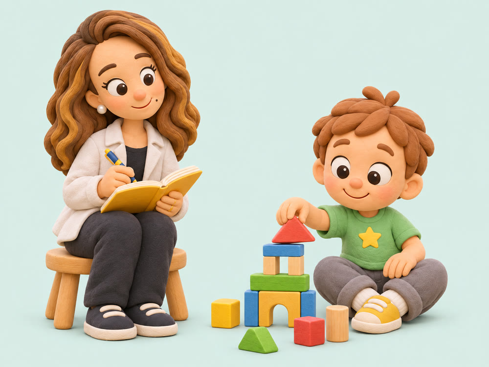
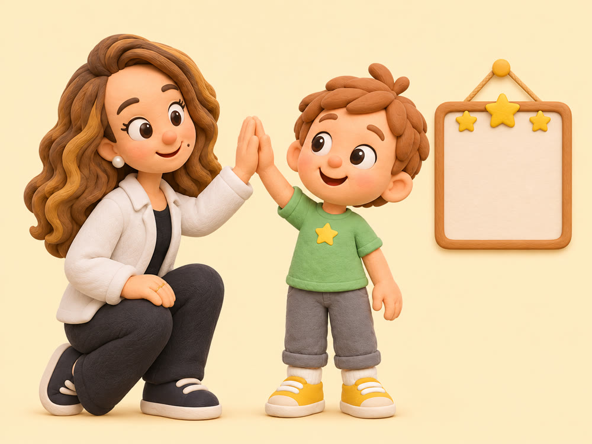

Что такое ABA и как это помогает ребёнку
Прикладной анализ поведения (ABA) изучает, как поведение связано с тем, что происходит вокруг. Он помогает понять причину трудного поведения и научить ребёнка нужным навыкам.

Четыре шага, из которых состоит работа
Логика одинакова для речи, поведения и туалетного навыка.
- 1НаблюдениеСмотрим, что происходит до поведения, во время и после него.
- 2ЦельФормулируем конкретно и измеримо: не «слушаться», а «выполнить просьбу без крика».
- 3Обучение навыкуДаём посильный способ просить, ждать, выбирать или говорить, поощряем нужное.
- 4Оценка динамикиВедём простые записи, меняем план, если шаг не работает.
Цикл повторяется, пока навык не закрепится.

Поддерживаем то, что хотим видеть чаще
Когда ребёнок делает шаг, мы замечаем его и поощряем. Так навык закрепляется без давления и наказаний.
ABA — это
- Работа с причиной, а не с симптомом
- Маленькие шаги и поощрение успехов
- Обучение родителей, чтобы результат держался дома
- Измерение и корректировка по данным
ABA — это не
- Дрессировка и давление на ребёнка
- Наказания и крики как метод
- Одно упражнение на всех детей
- Обещание быстрого чуда
Профессиональная переподготовка
ИПАП, Москва, 2024 год: «Прикладной анализ поведения (ABA-терапия): коррекция поведенческих нарушений, обучение, абилитация и развитие детей и подростков с ОВЗ».
Чего я не обещаю
Не обещаю чуда и не сравниваю детей между собой. Обещаю понятный план, честную оценку на каждом этапе и измеримый прогресс. Если метод не подходит вашему ребёнку, скажу об этом прямо.
Про метод и ожидания
Для каких детей подходит ABA?
Подход применяют при задержке речи, трудностях в поведении, РАС, СДВГ, а также когда нужно научить обычным навыкам, например ходить на горшок. Подбирается под ребёнка.
ABA — это жёстко?
Нет. Подход строится на поддержке, выборе и поощрении, а не на принуждении. Шаги подбираются так, чтобы ребёнок справлялся.
Что делать родителям между встречами?
Выполнять небольшие понятные задания из плана. Я объясняю, как именно, и отвечаю на вопросы.
Напишите, с чем вы пришли
Достаточно нескольких слов о ребёнке и запросе. Я отвечу и предложу формат.
Выберите мессенджер, который вам удобнее. VK и MAX открываются без VPN. Запись и оплата пока проходят через личные сообщения. Если вы за границей, способ оплаты (например, PayPal) и валюта обсуждаются индивидуально.